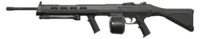

Ares
The Ares is a medium-cost machine gun. Unlike most other guns that gets less accurate as you continuously fire more bullets from them, the Ares is the only gun in the game that gets more accurate as it is continuously fired. As a machine gun, it is most effective as either a defensive tool to hold a site or when used to get wallbang kills due to its high penetration, rate of fire, and magazine capacity. Their lower mobility and higher equip speeds however make them less suited for peeking or entering sites, something better served at such a price by SMGs.
|
Damage
|
| 0 - 30m |
30 - 50m |
| Head - 72 |
Head - 67 |
| Body - 30 |
Body - 28 |
| Leg - 25 |
Leg - 23 |

Odin
The Odin is a high-cost machine gun. When using Primary Fire, the Odin's fire rate will increase over the duration the weapon is fired to a maximum amount, but using Alternate Fire will allow the user to shoot at that maximum fire rate immediately.
|
Damage
|
| 0 - 30m |
30 - 50m |
| Head - 95 |
Head - 77 |
| Body - 38 |
Body - 31 |
| Leg - 32 |
Leg - 26 |